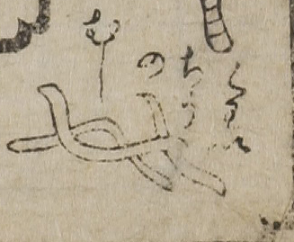

← 图鉴索引
病気；ビョウキ，虫；ムシ，回虫；カイチュウ

回虫の虫。細長い糸のような形状をしている。
出典：親書誌：U426_nichibunken_0017：セメンエン；セメンエン／日付：2006／資源識別子：U426_nichibunken_0017_0006_0000
Copyright (c)2010- International Research Center for Japanese Studies, Kyoto, Japan. All rights reserved.